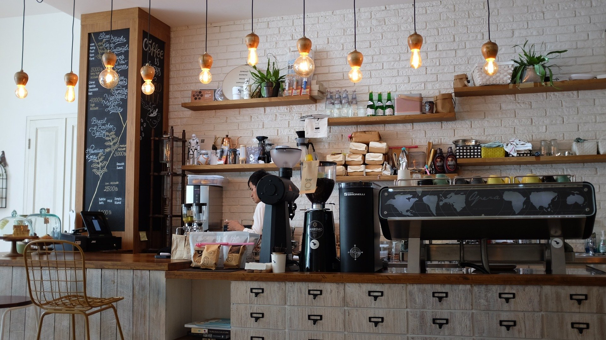
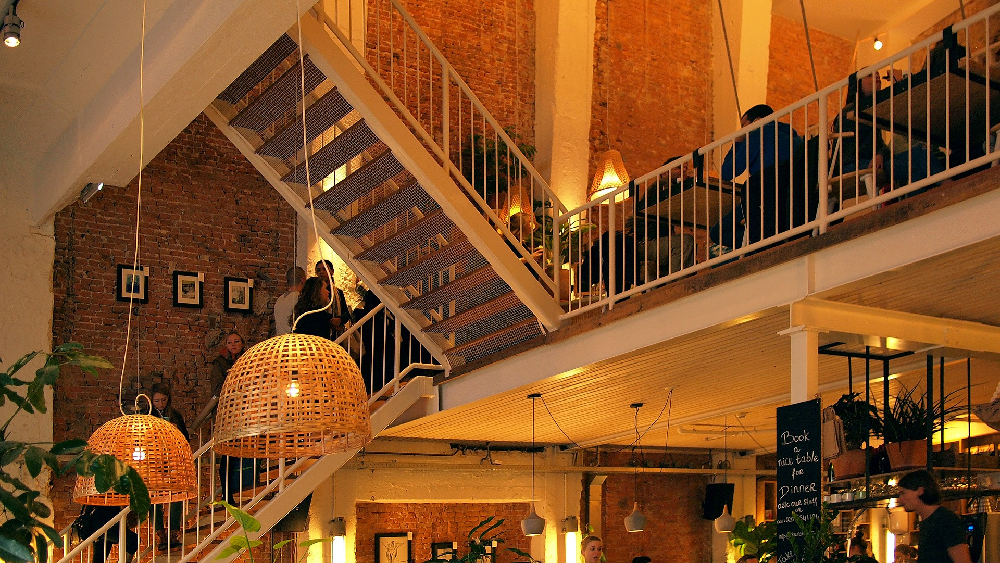

(1 2 3) 4 5 6 - 7 8 9 1 | artside@gmail.com | 123 Newbury Street, Boston Ma
RESTAURANTS
Woodman's Cafe
This quaint cafe is warm and comforting as it's perfect for a quick lunch or midnight snack. The atmosphere is perfect for people who enjoy expertly crafted coffees or even just a delicious sandwich with a yummy baked good.

Hours:
Mon-Fri: 11am - 9pm
Sat/Sun: 11am-11pm
Location:
246 Newbury St Boston, MA
Sorriso
Sorriso is a great place for a family meal. Its full Italian menu won't let you go hungry as they have some of the best breadsticks in all of Boston. The word sorriso, meaning smile, perfectly describes the way that locals feel about this eatery.This eatery is closest to the gallery and is a staff favorite!

Hours:
Mon-Fri: 4pm - 10:30pm
Sat/Sun: 12pm-11pm
Location:
126 Newbury St Boston, MA
Deandra
Another great place for a delicious family dinner or romantic date night. Deandra has a plethora of different foods on their menu including vegan and gluten free options. Weekends are always lively and fun!

Hours:
Mon-Fri: 10am - 9:30pm
Sat/Sun: 10am-11pm
Location:
362 Newbury St Boston, MA